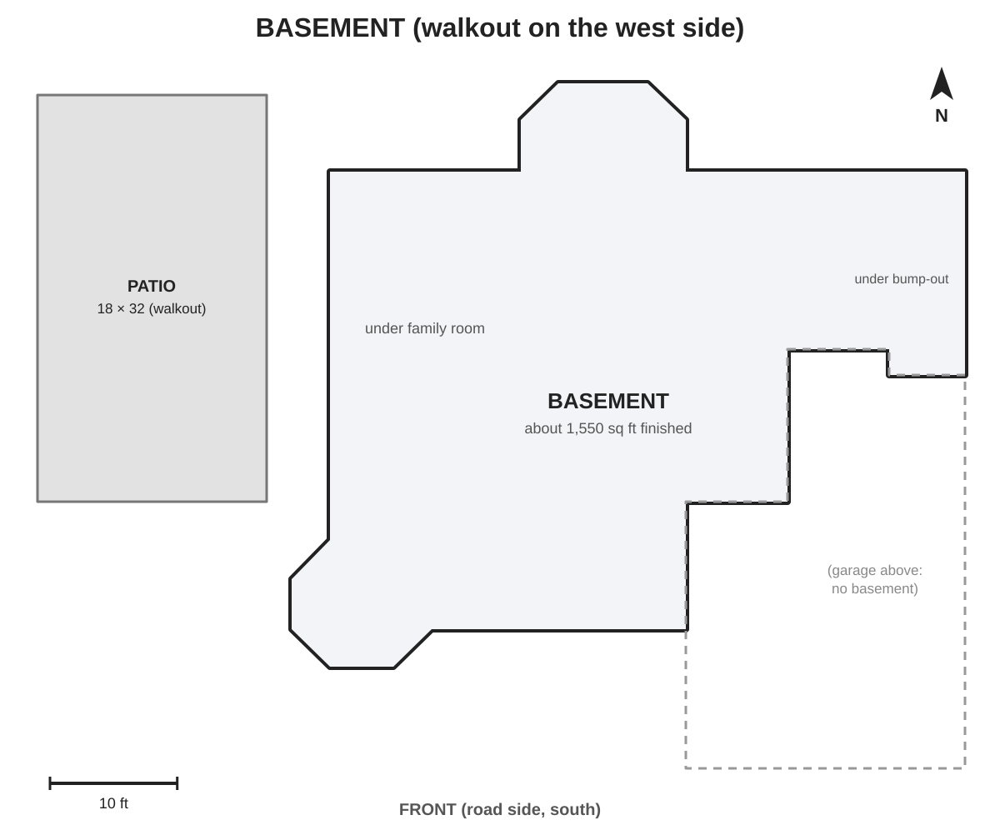
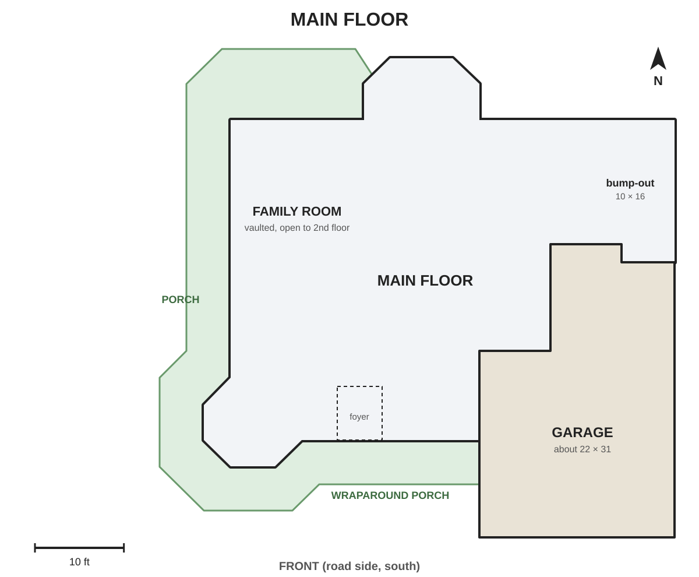
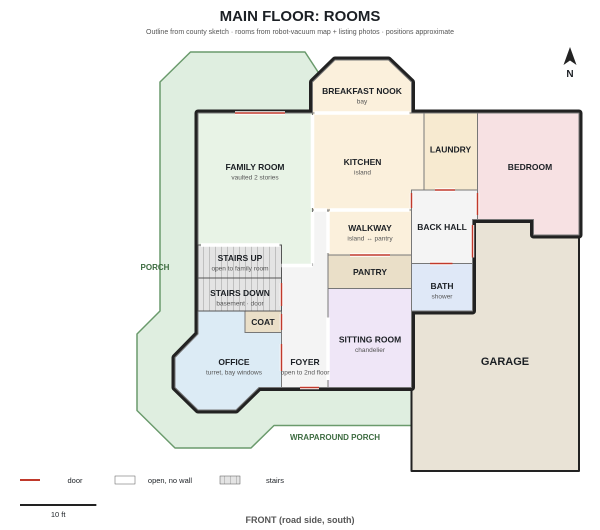
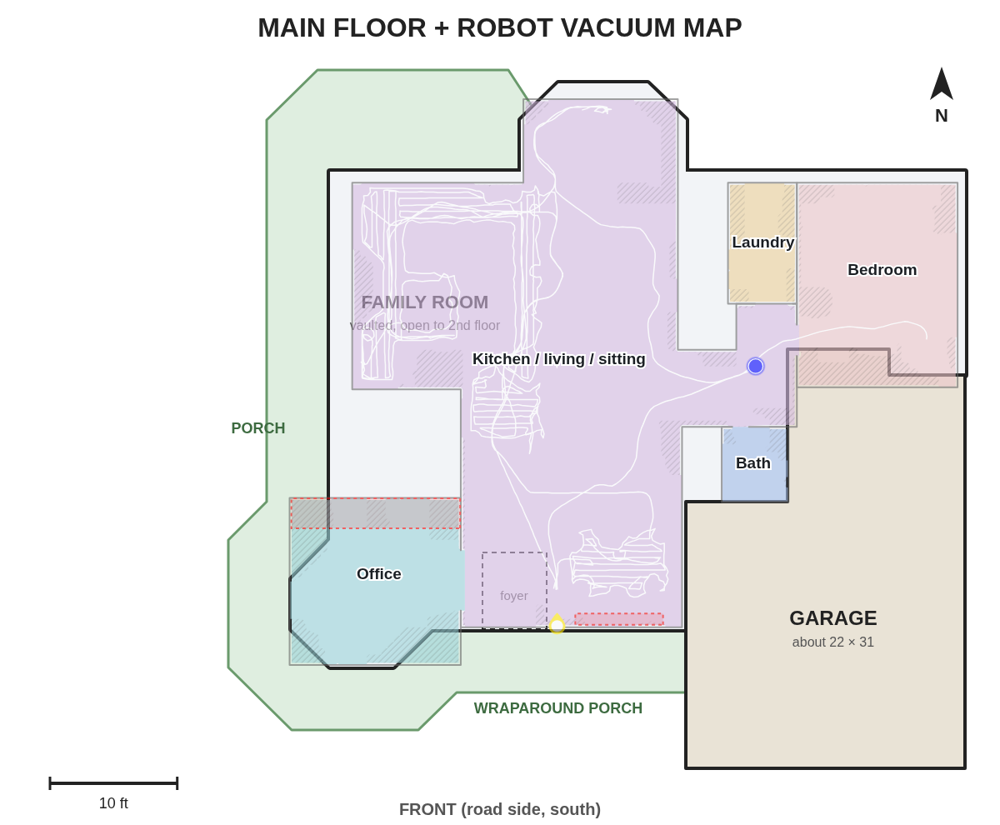
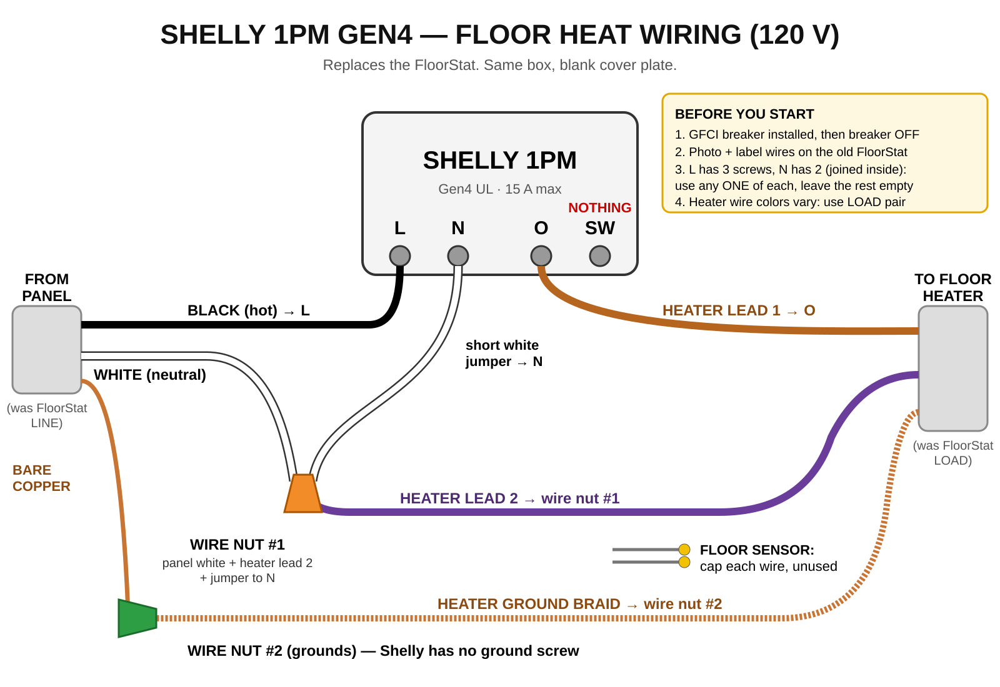

Safety first
Turn the breaker off and check the wires are dead with a tester before you touch anything. Smart switches in the wall carry full 120 V even when the thing they control is off.
Floor plans
Outlines traced to scale from the Greene County auditor's building sketch. North is up; the front of the house (road side) faces south. Interior walls, rooms and sensor locations will be added as they're mapped.




![Second floor room plan: U-shaped stairs from the family room arrive at a hall that overlooks the family room; a bedroom over the office turret, the open foyer, and a second bedroom along the south side; a long narrow hall bath, linen closet and the primary bedroom with double doors on the north side; the primary bath over the breakfast nook bay with jacuzzi tub, shower, vanity, toilet closet and linen closet; a short hall at the east end into an office over the garage with an HVAC closet and a small door to the unfinished attic.](img/floorplan/second-rooms.png)
Source: county auditor sketch (all floors drawn on top of each other).

Breaker panel & circuits
Panel: Square D Homeline.
| Breaker # | Amps | What it feeds | Notes |
|---|---|---|---|
| Not recorded yet | Not recorded yet | Heated floors (4 zones) | No GFCI breakers on these circuits today; the old floor thermostats have GFCI built in. Plan: add one Homeline GFCI breaker per floor-heat circuit before any old thermostat is replaced. PLANNED |
Confusing circuits will be traced and explained here: which breaker feeds what, and anything that doesn't match the panel label.
Heated floors
Electric heating mats under the tile, 4 zones, each run from a wall control in a single-gang box. The floors only need to be warm at set times, so room temperature doesn't matter.
Zones
| Zone | Room | Wall control now | Status |
|---|---|---|---|
| 1 | Not recorded yet | SunTouch FloorStat 500600-120 (original) | ORIGINAL Display dead |
| 2 | Not recorded yet | SunTouch FloorStat 500600-120 (original) | ORIGINAL Display dead |
| 3 | Not recorded yet | SunTouch FloorStat 500600-120 (original) | ORIGINAL Display dead |
| 4 | Not recorded yet | SunTouch FloorStat 500600-120 (original) | ORIGINAL Display dead |
Original control: SunTouch FloorStat 500600-120
- Programmable floor thermostat, 120 VAC, 2000 W max, GFCI built in.
- Reads a floor temperature sensor (thin wire pair) buried in the floor.
- The displays are dead, so they can't be set. They're being replaced one at a time.
Replacement: Shelly 1PM Gen4 UL PLANNED
- Small smart relay that fits in the same wall box behind a blank cover plate. Rated 15 A. Measures power.
- Turned on and off by Home Assistant on a schedule (or the Shelly app, or the small button on the device).
- Has no GFCI, so the circuit's GFCI breaker must be installed first.
- Terminals, left to right: O, SW, L, L, L, N, N. The three L screws are joined inside, and so are the two N screws: use one of each.
- L = incoming hot. N = neutral (powers the Shelly). O = switched hot out to the heater. SW = optional wall-switch input, left empty here.
- The on/off relay is inside the Shelly, between L and O. The floor sensor is not used.

Wiring, by wire
| Wire | Goes to |
|---|---|
| Black from panel (hot) | Shelly L |
| Heater lead 1 | Shelly O |
| White from panel (neutral) | Wire nut #1 |
| Heater lead 2 | Wire nut #1 |
| Short white jumper | Wire nut #1 to Shelly N |
| Bare copper from panel | Wire nut #2 |
| Heater ground braid / green | Wire nut #2 (the Shelly has no ground screw) |
| Floor sensor (thin pair) | Cap each wire; not used |
| Shelly SW | Nothing |
Heater lead colors vary. The heater pair is whichever two wires were on the old FloorStat's LOAD terminals; the panel pair was on LINE. Photograph the old wiring before removing it.
Thermostats (heating & cooling)
| Location | Model | App | Notes |
|---|---|---|---|
| Main floor | Honeywell T5 | Resideo / First Alert | Also run by Home Assistant schedules. INSTALLED |
| Upstairs | Honeywell T5 | Resideo / First Alert | Also run by Home Assistant schedules. INSTALLED |
Change log
- 2026-11-21: Second floor adjusted from listing photos: angled walk-in closet inside the primary bedroom door, glass double doors to the balcony beside the primary bath doorway, HVAC closet on the office's west wall, gable window at the office's south end, U-shaped stairs.
- 2026-11-21: Second floor room plan added from walk-through.
- 2026-11-21: Room plan corrected from walk-through notes: coat closet, separate up/down stairs (basement stairs behind a door), pantry and walkway, front room is the sitting room, foyer open to 2nd floor.
- 2026-11-21: Main floor room plan added, from the robot vacuum map and listing photos.
- 2026-11-21: Floor plan outlines added (basement, main, second), traced from the county auditor sketch.
- 2026-11-21: Map started. Panel, heated floors (original controls + Shelly replacement plan and wiring), thermostats.